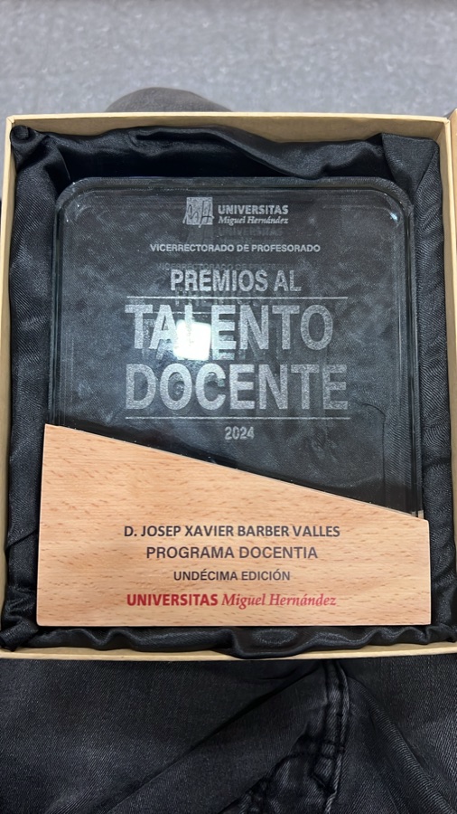

AI for public institutions
Generative AI tools, document analysis, prompting and responsible use in administrative work.
Specialised training
Teaching experience in artificial intelligence, data science and methodology, connected to the needs of professionals and organisations.
Generative AI tools, document analysis, prompting and responsible use in administrative work.
Understanding data, selecting methods and evaluating predictive models.
Study planning and methodological training for research teams, including animal experimentation.
Participation in specialised health training and applied teaching innovation. Content aligned with professional roles and needs.

Teaching experience
University teaching since 2005 and postgraduate training for professionals. Teaching Talent recognition and excellent evaluations in the DOCENTIA-UMH programme.
Let’s discuss your team’s needs ↗The starting point is the team’s experience, everyday tasks and learning goals. From there, a programme can be defined around relevant examples, exercises and supporting materials.
Start with your question
Tell me what you need to decide, what data you have and who the solution should help.